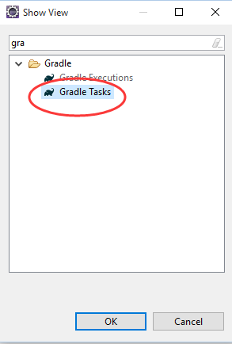
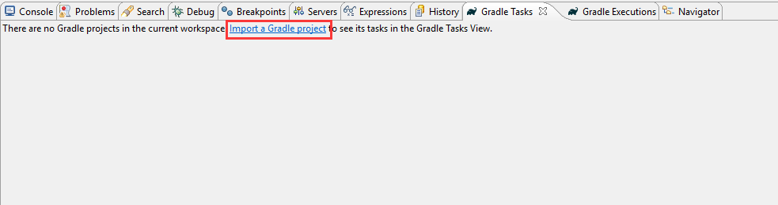
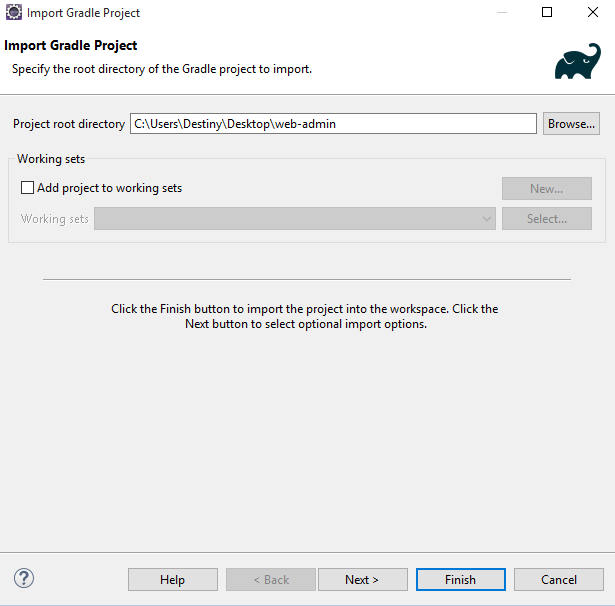
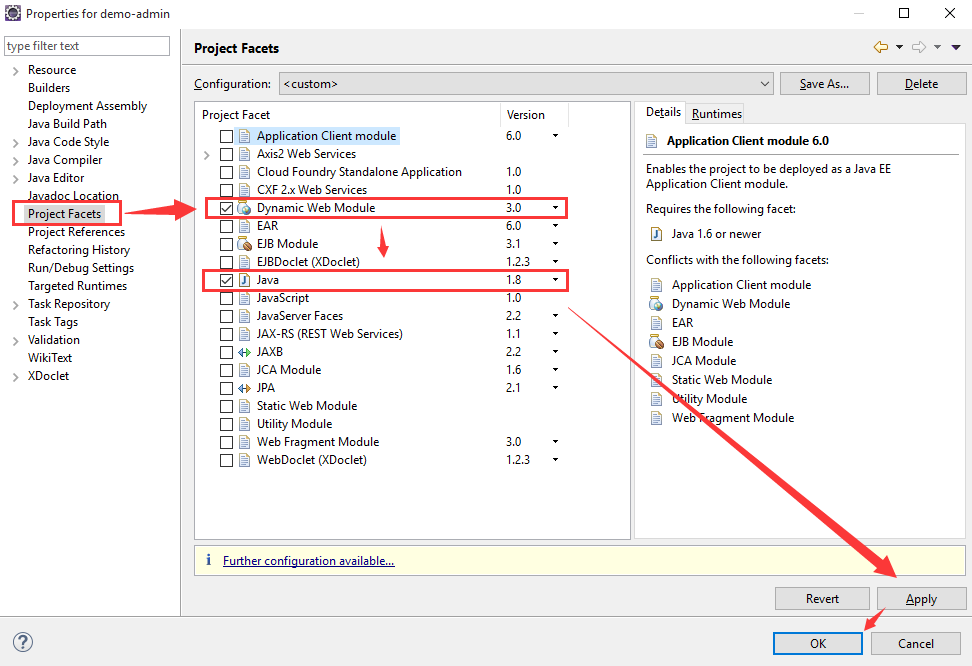
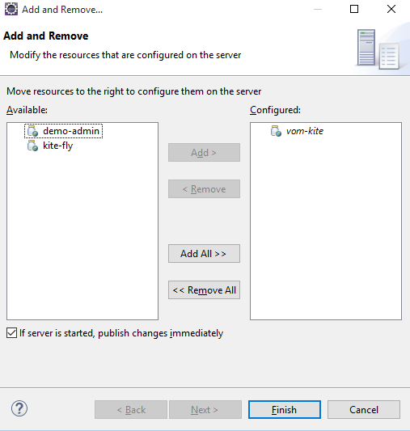

构建项目步骤
- 1. 将zip包解压（注意要保留根目录）然后将项目导入eclipse（请提前准备好gradle环境和eclipse gradle插件buildship）
- 2. 打开eclipse的Gradle Tasks窗口（Window -> Show View -> other...），如下图：
- 
- 3. 导入项目，如下图：
- 
- 4. 选择刚刚解压出的项目文件夹，如下图：
- 
- 5. 导入成功之后，这时候的项目还不是web项目，需要转换一下（先在项目上右键，选择Properties），如下图：
- 
- 6. 将web-admin同vom-kite一起加入eclipse tomcat服务环境即可启动，如下图：
- 